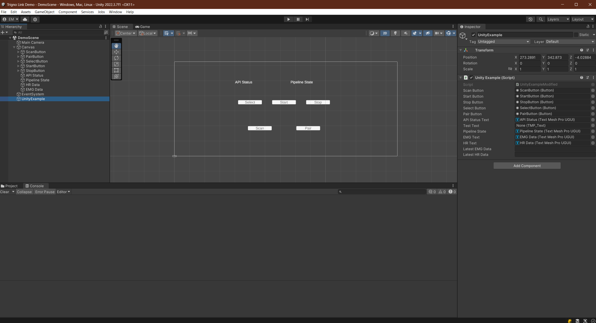
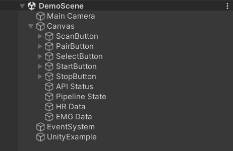

Data Collection with Physiological Sensors
Now that you have explored both Unity and the various types of physiological sensors, it’s time to begin integrating them together. You will do this using the Delsys Trigno Link, a device that allows multiple physiological sensors to be connected to a single computer via bluetooth. This tutorial will include an in-depth tutorial on how to connect and setup the Trigno Link, and how to collect data from the sensors attached to it. You will start simple, and develop a simple, console-based based Unity application that prints out the data recieved rom the sensors. The main goal of this module is to ensure that you can effectively use and read from the Trigno Link, and access that data in Unity. Once you have these basics down, the next module wll move on to more complex integration techniques using VR.
Setting up the Trigno Link

The Trigno Link is the key to integrating physiological sensors with Unity. While the Trigno Link is not required to receive data from only Trigno sensors, it is necessary to use both Trigno and third-party sensors congruently. As such, it is important to understand how the Link works in order to seamlessly integrate both Delsys and third-party sensors simultaneously.
Trigno Link Design
The first step to effectively using the Trigno Link is knowing how it works. The Trigno Link is a wireless device that connects to a computer via a USB-C dongle. Two to thirty-two sensors can be simultaneously linked to the Trigno Link. Essentially, these sensors concurrently transmit their raw data to the Link, where it keeps their data streams separate and sends them to the computer for use. This data can come from a variety of sensors, including but not limited to any of the sensors mentioned in the previous module. Crucially, this device is not locked to only Delsys products, but supports many third-party options, vastly increasing its versatility. You will need the Trigno Wireless BioFeedback System in order for the Link to provide the synchronized data. You will connect the device to a computer using the USB-A side of the included cable, and attach the USB-C side to the female plug on the Link. An LED light will glow on the top of the Link once it has been connected. The color of this light can help determine the current feedback state of the Link. You can find a list of the different feedback states and their corresponding light colors in the Trigno Link User Guide.
Getting Started
Upon unboxing your Trigno Link, you’ll be greeted to the compact device, a USB-C dongle, a quickstart guide, and a user guide. It is highly recommended to read the quickstart guide and user guide in conjunction with the tutorial presented here, as this will give you the most comprehensive understanding possible. Additionally, you can use these resources to troubleshoot any issues you have with the product.
Note
In order to use the Trigno Link, you must have at least two compatible physiological sensors, with at least one being a Trigno Sensor (Which you will already be using due to the requirement of the Trigno Wireless BioFeedback System’s usage). The link itself does not generate any data, instead it allows data from other sensors to be read in tandem. All Delsys made sensors are natively supported, alongside a list of third-party sensors that you can find here in the Applications section.
To begin using the Link, you will need the Trigno Discover application, a piece of Delsys software used to monitor and receive data from the sensors on a computer. This software can be found here. As of writing this tutorial, the current version of this software is 1.6.5.. You will have to either log-in or sign up in order to use the application, and you have the option of working offline as well. Once you have the software installed and have created an account, you are ready to begin connecting sensors.
Connecting Sensors
Using the Trigno Link, Trigno Wireless BioFeedback System, and Trigno Discover, you can now connect sensors. To do this, follow the steps below:

Connect the Trigno Link to your computer. First, plug the USB-A side of the included cable into the computer, then plug the USB-C side of the cable into the link itself. If done correctly, the LED indicator should glow amber on the Link. You are ready to move on to the next step.
Connect your Trigno Wireless BioFeedback System to your computer via USB. This is necessary to use the Trigno sensors and any other third-party sensors with the Link. You can find a manual to assist you in connecting this device and its sensors here. Note that it is your responsibility to understand how to connect and use the various sensors you intend to employ. Usually, you can find detailed guides on the manufacturer’s website.

Launch the Trigno Discover application on your computer. Log in to your account and verify that the Trigno Link and Trigno Wireless BioFeedback System are recognized by the software (You shouldn’t even be able to access the application if the Wireless Feedback System isn’t connected). You should see a tab for the Trigno Base and for the Trigno Link in the app. Should you need additional assistance in using Trigno Discover, the User Guide can help you.

Add the sensors you wish to use to the Sensor Configuration Panel on the home screen. You can do this manually using the Add New Sensor option. Once a scanner has been paired by the system, you can use the Scan for Sensors option to attempt to connect all previously connected sensors, making the manual pairing unnecessary for subsequent usage. Scanning for sensors can even find find some sensors without having added them before.Generally, the bast practice is to Scan for Sensors first and then use Add New Sensor to add any that weren’t caught by the scan. For sensors connected via the Trigno Link, use the Scan for Sensors option in the Trigno Link tab while pairing on the sensor.

Depending on the sensors you are using, you may have some additional options to pick between in the sensor’s configuration mode selection. For example, Trigno Avanti sensors can switch between EMG, Accelerator, Gyroscope, Orientation, and IMU sensing. Refer to the manufacturers guide for your specific sensor to see what options are available.
Once your sensors have all been connected and are visible on the Sensor Configuration Panel, it is good practice to run a test trial to make sure the data is being properly collected from all sensors. You can use the Trial Information Tab to control your data collection.
Note
While the Trigno Discover application can be used by itself to collect sensors from data and store it as csv data, the data collection used in this tutorial will be done using a Unity integration instead, using the data in real time to influence the Unity application. Despite this, Trigno Discover is an excellent tool for general data collection, and it is good have proficiency in it.
Connecting to Unity
Warning
There is a known bug preventing the usage of the Delsys API with specific versions of Unity. While it is unknown exactly which versions are affected, 2022.3.7f1 has been tested and is working, so that is what will be used here and what is recommended for you to use as well.
Now that you have your sensors connected and are ready to begin using them, it’s time to create a Unity application. Follow the steps below to get set up for Unity development with the Delsys API.

Launch Unity Hub and login to your Unity account. If you do not have either of these completed, see Installing Unity.

On the sidebar on the left side of the application, select the Projects tab.
On the top right of the application, press the button titled New project.

From here you can select any template project type you would like, depending on the context of the application you are creating. For this basic introduction to the integration, we will use the 2D Core template.
Likewise to the projects you created previously in this set of tutorials, you can name the project whatever you like and choose where it is saved.
Click the Create project button in the bottom right corner of the application to create the project and launch the Unity editor.

In the editor, navigate to the Edit option in the top ribbon, and select Project Settings from the dropdown menu.

In the project settings menu, select the option on the right toolbar titled Player. In the menu for your selected platform (in this case Windows, Mac, and Linux), scroll down to the Configuration section. In this location, make sure the Scripting Backend is set to IL2CPP and that the Api Compatibility Level is set to .NET Framework. Your project may take a minute to apply these changes.

In the assets folder of your Unity project, add an empty folder called Plugins. This is where you will put the API files.

To get the API files you will need to add to your project, go to the Delsys Example Applications Github page. Select the green button labeled Code, and select the Download ZIP option from the dropdown menu that appears. This should download a ZIP file containing the example projects, as well as the API files you’ll need.
Right click the ZIP file you just downloaded in your file explorer, and Extract it. In Windows 11, this is done through an option called Extract All… in the right click menu.

Open the extracted folder, and navigate to the
~\Example-Applications-main\Unity\Assetssubdirectory.Copy the Streaming Assets folder into your project’s assets folder.
Navigate to the
~\Example-Applications-main\Delsys Unity Example\Assets\Pluginsfolder and copy everything contained in it to the Plugins folder you created for your project.

In the plugins folder in your project, delete the file called System.CodeDom.dll and its associated meta file System.CodeDom.dll.meta. Delete System.Reactive.Linq.dll and its associated meta file System.Reactive.Linq.dll.meta. Delete System.Management.dll and its associated meta file System.Management.dll.meta.

In the plugins folder in your project, Move the file called SiUSBXp.dll and its associated meta file SiUSBXp.dll.meta to the root folder of your project. This should result in something looking like the image above.

Lastly, copy the UnityExample.cs script from the Delsys Unity Example project into the Assets folder of your project. You will be adding to this script to implement the Trigno Link, since it is easier than starting from scratch.
Allow your Unity project time to reload its domain, and then ensure there are no compilation errors with the project (You may see warnings, indicated with a yellow exclamation mark, these are okay). If there are none, you are ready to move on. If not, retry the steps above on a different version of Unity or try and troubleshoot the compilation error using the Troubleshooting Resources page of this site.
A Simple Unity Application
For this simple application, you are going to be slightly modifying the Unity Example script that you got from the Delsys Unity Example Application. It is entirely possible to make your own script utilizing the Delsys API, and if you wish to do so you may, but using the Example script as a template offers useful and working functions right from the start, saving you time and providing you with something you know works. If you do decide to create your own scripts utilizing the Delsys API in the future, you can use the Example script alongside the Delsys API Quickstart Guide and Delsys API User Guide to learn about the available functionality. You can find the Unity project on our GitHub page.
Modifying the Example Script
Note
Before you begin modifying your script, please remember to put your API license and key into the private string key = ""; and private string license = ""; variables of your modified Example script. You cannot use the API without them.
Below is the modified code for the Example script that allows it to search for Trigno Link components alongside the Trigno RF ones. Beneath that you will be given descriptions of what each modification does, so you can use it in your future projects.
1 using DelsysAPI.Channels.Transform;
2 using DelsysAPI.Configurations;
3 using DelsysAPI.Configurations.DataSource;
4 using DelsysAPI.Contracts;
5 using DelsysAPI.DelsysDevices;
6 using DelsysAPI.Events;
7 using DelsysAPI.Pipelines;
8 using DelsysAPI.Transforms;
9 using DelsysAPI.Utils;
10 using System;
11 using System.Collections.Generic;
12 using System.IO;
13 using System.Linq;
14 using System.Threading.Tasks;
15 using UnityEngine;
16 using UnityEngine.UI;
17 using UnityEngine.Events;
18 using TMPro;
19 using DelsysAPI.Components.TrignoLink;
20 public class UnityExample : MonoBehaviour
21 {
22 //Paste key/license strings here
23 private string key = "";
24 private string license = "";
25
26
27 /// <summary>
28 /// Data structure for recording every channel of data.
29 /// </summary>
30 List<List<double>> Data = new List<List<double>>();
31 public Button ScanButton;
32 public Button StartButton;
33 public Button StopButton;
34 public Button SelectButton;
35 public Button PairButton;
36 IDelsysDevice DeviceSource = null;
37 int TotalLostPackets = 0;
38 int TotalDataPoints = 0;
39 public TMP_Text APIStatusText, TestText, PipelineState, EMGDataText, HRDataText;
40 Pipeline RFPipeline;
41 ITransformManager TransformManager;
42 string text, pipeline_state;
43 UnityEvent m_scan;
44 bool select, scan, start, stop, pair;
45 string[] compoentNames;
46 List<List<List<double>>> AllCollectionData = new List<List<List<double>>>();
47 VerticalLayoutGroup verticalLayoutGroup;
48
49 private bool usingTrignoLink;
50 public string latestEMGData;
51 public string latestHRData;
52
53 // Use this for initialization
54 void Start()
55 {
56
57 Debug.Log("Entered Start Function.");
58
59 usingTrignoLink = true;
60
61 //Finding references to all the buttons in the scene
62 ScanButton = GameObject.Find("ScanButton").GetComponent<Button>();
63 ScanButton.onClick.AddListener((UnityEngine.Events.UnityAction) this.clk_Scan);
64
65 StartButton = GameObject.Find("StartButton").GetComponent<Button>();
66 StartButton.onClick.AddListener((UnityEngine.Events.UnityAction) this.clk_Start);
67
68 StopButton = GameObject.Find("StopButton").GetComponent<Button>();
69 StopButton.onClick.AddListener((UnityEngine.Events.UnityAction) this.clk_Stop);
70
71 SelectButton = GameObject.Find("SelectButton").GetComponent<Button>();
72 SelectButton.onClick.AddListener((UnityEngine.Events.UnityAction) this.clk_Select);
73
74 PairButton = GameObject.Find("PairButton").GetComponent<Button>();
75 PairButton.onClick.AddListener((UnityEngine.Events.UnityAction) this.clk_Pair);
76
77 scan = true; //Enabling only the Scan button for now.
78 start = false;
79 stop = false;
80 select = false;
81 pair = false;
82
83 CopyUSBDriver(); // Copying the SiUSBXp.dll file if not present
84 InitializeDataSource(); //Initializing the Delsys API Data source
85 }
86
87
88 // Update is called once per frame
89 void Update()
90 {
91 APIStatusText.text = text;
92 SelectButton.enabled = select;
93 ScanButton.enabled = scan;
94 StartButton.enabled = start;
95 StopButton.enabled = stop;
96 PairButton.enabled = pair;
97 PipelineState.text = PipelineController.Instance.PipelineIds[0].CurrentState.ToString();
98 EMGDataText.text = "Latest EMG Data: " + latestEMGData;
99 HRDataText.text = "Latest HR Data: " + latestHRData;
100 }
101
102 public void CopyUSBDriver()
103 {
104 string unityAssetPath = Application.streamingAssetsPath + "/SiUSBXp.dll";
105 string adjacentToExePath = Application.dataPath + "/../SiUSBXp.dll";
106 if (!File.Exists(adjacentToExePath))
107 {
108 File.Copy(unityAssetPath, adjacentToExePath);
109 }
110 }
111
112 /// <summary>
113 /// Dumping all the debug statements from DelsysAPI into the Unity's Log file, see https://docs.unity3d.com/Manual/LogFiles.html for more details.
114 /// </summary>
115 /// <returns> None </returns>
116 public void TraceWriteline(string s, object[] args)
117 {
118 for(int i=0; i< args.Count();i++){
119 s = s + "; " + args[i];
120 }
121 Debug.Log("Delsys API:- " + s);
122
123 }
124
125 #region Initialization
126 public void InitializeDataSource()
127 {
128
129 text = "Creating device source . . . ";
130 if(key.Equals("") || license.Equals("")){
131 text = "Please add your license details from the code.";
132 }
133 var deviceSourceCreator = new DeviceSourcePortable(key, license);
134 deviceSourceCreator.SetDebugOutputStream(TraceWriteline);
135 DeviceSource = deviceSourceCreator.GetDataSource(new SourceType[2] { SourceType.TRIGNO_RF, SourceType.TRIGNO_LINK });
136 text = "Device source created.";
137 DeviceSource.Key = key;
138 DeviceSource.License = license;
139 text = "Loading data source . . . ";
140
141 try
142 {
143 LoadDataSource(DeviceSource);
144 }
145 catch(Exception exception)
146 {
147 text = "Something went wrong: " + exception.Message;
148 return;
149 }
150 text = "Data source loaded and ready to Scan.";
151 }
152
153 public void LoadDataSource(IDelsysDevice ds)
154 {
155 PipelineController.Instance.AddPipeline(ds);
156
157 RFPipeline = PipelineController.Instance.PipelineIds[0];
158 TransformManager = PipelineController.Instance.PipelineIds[0].TransformManager;
159
160 RFPipeline.TrignoRfManager.ComponentScanComplete += ComponentScanComplete;
161 RFPipeline.CollectionStarted += CollectionStarted;
162 RFPipeline.CollectionDataReady += CollectionDataReady;
163 RFPipeline.CollectionComplete += CollectionComplete;
164 RFPipeline.TrignoRfManager.ComponentAdded += ComponentAdded;
165 RFPipeline.TrignoRfManager.ComponentLost += ComponentLost;
166 RFPipeline.TrignoRfManager.ComponentRemoved += ComponentRemoved;
167 }
168
169 #endregion
170
171 #region Button Click events: clk_Scan, clk_Select, clk_Start, clk_Stop, clk_Pair
172 public virtual async void clk_Scan()
173 {
174 Console.WriteLine("Scan Clicked");
175 foreach(var comp in RFPipeline.TrignoRfManager.Components)
176 {
177 await RFPipeline.TrignoRfManager.DeselectComponentAsync(comp);
178 }
179 //Trying to search for Link components - will set link bool to false if fail
180 try{
181 foreach (var component in RFPipeline.TrignoLinkManager.Components)
182 await RFPipeline.TrignoLinkManager.DeselectComponentAsync(component);
183 Debug.Log("Trigno Link has sensors connected.");
184 }
185 catch(Exception e){
186 Debug.Log("Trigno Link has no sensors connected.");
187 usingTrignoLink = false;
188 }
189 text = "Scanning . . .";
190 await RFPipeline.Scan();
191 }
192
193 public virtual void clk_Select()
194 {
195 SelectSensors();
196 }
197
198 public virtual async void clk_Start()
199 {
200
201 // The pipeline must be reconfigured before it can be started again.
202 bool success = ConfigurePipeline();
203 if(success){
204 Debug.Log("Starting data streaming....");
205 text = "Starting data streaming....";
206 await RFPipeline.Start();
207 stop = true;
208 }
209 else{
210 Debug.Log("Configuration failed. Cannot start streaming!!");
211 text = "Fatal error!";
212 }
213
214 }
215
216 public virtual async void clk_Stop()
217 {
218 await RFPipeline.StopInformationStream();
219 await RFPipeline.Stop();
220 RFPipeline.SetActiveDataSources(new List<SourceType>{SourceType.TRIGNO_RF, SourceType.TRIGNO_LINK});
221 await RFPipeline.DisarmPipeline();
222 PipelineController.Instance.RemovePipeline(0);
223
224 }
225
226 public virtual async void clk_Pair()
227 {
228 text = "Awaiting a sensor pair . . .";
229 await RFPipeline.TrignoRfManager.AddTrignoComponent(new System.Threading.CancellationToken());
230 }
231
232 #endregion
233
234 public void SelectSensors()
235 {
236 text = "Selecting all sensors . . .";
237
238 // Select every component we found and didn't filter out.
239 foreach (var component in RFPipeline.TrignoRfManager.Components)
240 {
241 bool success = RFPipeline.TrignoRfManager.SelectComponentAsync(component).Result;
242 if(success){
243 text = component.FriendlyName + " selected!";
244 }
245 else{
246 text = "Could not select sensor!!";
247 }
248 }
249 //Now doing search for link components if link is enabled.
250 if(usingTrignoLink == true){
251 foreach(var component in RFPipeline.TrignoLinkManager.Components){
252 bool success = RFPipeline.TrignoLinkManager.SelectComponentAsync(component).Result;
253 if (success == true){
254 text = component.FriendlyName + "selected!";
255 }else{
256 text = "Could not select sensor!!";
257 }
258 }
259 }
260 start = true;
261 }
262
263
264 /// <summary>
265 /// Configures the input and output of the pipeline.
266 /// </summary>
267 /// <returns></returns>
268 private bool ConfigurePipeline()
269 {
270 var inputConfiguration = new TrignoDsConfig();
271
272 if (PortableIoc.Instance.CanResolve<TrignoDsConfig>())
273 {
274 PortableIoc.Instance.Unregister<TrignoDsConfig>();
275 }
276
277 PortableIoc.Instance.Register(ioc => inputConfiguration);
278
279 foreach (var somecomp in RFPipeline.TrignoRfManager.Components.Where(x => x.State == SelectionState.Allocated))
280 {
281 somecomp.SelectSampleMode(somecomp.DefaultMode);
282 }
283
284 try
285 {
286 Debug.Log("Applying Input configurations");
287 bool success_1 = RFPipeline.ApplyInputConfigurations(inputConfiguration);
288 if(success_1){
289 text = "Applied input configuration";
290 Debug.Log("Applied input configuration");
291 }
292 else{
293 text = "Input configurations failed";
294 Debug.Log("Input configurations failed");
295 }
296 }
297 catch (Exception exception)
298 {
299 text = exception.Message;
300 }
301 RFPipeline.RunTime = int.MaxValue;
302
303 TransformConnector transformConnector = new TransformConnector(RFPipeline);
304 OutputConfig outputConfig = transformConnector.SetupTransforms();
305
306 bool success_2 = RFPipeline.ApplyOutputConfigurations(outputConfig);
307 if(success_2){
308 text = "Applied Output configurations";
309 Debug.Log("Applied Output configurations");
310 return true;
311 }
312 else{
313 text = "Output configurations failed!";
314 Debug.Log("Output configurations failed!");
315 return false;
316 }
317 }
318
319
320
321 #region Collection Callbacks -- Data Ready, Colleciton Started, and Collection Complete
322 public virtual void CollectionDataReady(object sender, ComponentDataReadyEventArgs e)
323 {
324 //Channel based list of data for this frame interval
325 List<List<double>> data = new List<List<double>>();
326
327 for (int k = 0; k < e.Data.Count(); k++)
328 {
329 // Loops through each connected sensor
330 for (int i = 0; i < e.Data[k].SensorData.Count(); i++)
331 {
332 // Loops through each channel for a sensor
333 for (int j = 0; j < e.Data[k].SensorData[i].ChannelData.Count(); j++)
334 {
335 data.Add(e.Data[k].SensorData[i].ChannelData[j].Data);
336 for (int k2 = 0; k2 <e.Data[k].SensorData[i].ChannelData[j].Data.Count(); k2++){
337 if (i == 1)//Heart Rate Sensor Index
338 {
339 latestHRData = e.Data[k].SensorData[i].ChannelData[j].Data[k2].ToString();
340 }
341 else if (i == 0)//Avanti Sensor Index
342 {
343 latestEMGData = e.Data[k].SensorData[i].ChannelData[j].Data[k2].ToString();
344 }
345 Debug.Log(e.Data[k].SensorData[i].ChannelData[j].Data[k2]);
346 }
347 }
348 }
349
350 }
351
352 //Add frame data to entire collection data buffer
353 AllCollectionData.Add(data);
354 text = AllCollectionData.Count.ToString();
355 }
356
357 public virtual void CollectionStarted(object sender, DelsysAPI.Events.CollectionStartedEvent e)
358 {
359 AllCollectionData = new List<List<List<double>>>();
360 text = "CollectionStarted event triggered!";
361 var comps = PipelineController.Instance.PipelineIds[0].TrignoRfManager.Components;
362
363 // Refresh the counters for display.
364 TotalDataPoints = 0;
365 TotalLostPackets = 0;
366
367 // Recreate the list of data channels for recording
368 int totalChannels = 0;
369 for (int i = 0; i < comps.Count; i++)
370 {
371 for (int j = 0; j < comps[i].TrignoChannels.Count; j++)
372 {
373 if (Data.Count <= totalChannels)
374 {
375 Data.Add(new List<double>());
376 }
377 else
378 {
379 Data[totalChannels] = new List<double>();
380 }
381 totalChannels++;
382 }
383 }
384 }
385
386 public virtual async void CollectionComplete(object sender, DelsysAPI.Events.CollectionCompleteEvent e)
387 {
388 text = "CollectionComplete event triggered!";
389 await RFPipeline.DisarmPipeline();
390 }
391
392 #endregion
393
394 #region Component Events: Scan complete, Component Added, Lost, Removed
395 public virtual void ComponentScanComplete(object sender, DelsysAPI.Events.ComponentScanCompletedEventArgs e)
396 {
397 text = "Scan Complete";
398
399 select = true;
400 pair = true;
401
402 }
403
404 public async void ComponentAdded(object sender, ComponentAddedEventArgs e)
405 {
406
407 }
408
409 public virtual void ComponentLost(object sender, ComponentLostEventArgs e)
410 {
411 int sensorStickerNumber = RFPipeline.TrignoRfManager.Components.Where(sensor => sensor.Id == e.Component.Id).First().PairNumber;
412 Console.WriteLine("It appears sensor " + sensorStickerNumber + " has lost connection. Please power cycle this sensor.");
413 text = "It appears sensor " + sensorStickerNumber + " has lost connection";
414
415 }
416
417 public virtual void ComponentRemoved(object sender, ComponentRemovedEventArgs e)
418 {
419
420 }
421
422 #endregion
423
424 }
The first change made to the code from the original example script was the addition of the lines using TMPro; and using DelsysAPI.Components.TrignoLink. These lines add necessary functionality for Unity’s updated text system and the Trigno Link, respectively.
After adding TMPro, change the line public Text APIStatusText, TestText, PipelineState; to public TMP_Text APIStatusText, TestText, PipelineState;. This will convert the text variables used to the updated text system.
On the same line as the previous modification, add EMGDataText and HRDataText. The result should look as follows: public TMP_Text APIStatusText, TestText, PipelineState, EMGDataText, HRDataText;. These two variables will be used to display the latest EMG and HR data on screen.
The next modification that was made was the creation of the boolean variable usingTrignoLink. This variable lets the script know whether or not a Trigno Link is being used. In the start method, its default value is set to true. Later, you will see that the scan function can change this value.
Also in the start method, the lines:
ScanButton = GameObject.FindGameObjectWithTag ("ScanButton").GetComponent<Button>();
ScanButton.onClick.AddListener((UnityEngine.Events.UnityAction) this.clk_Scan);
StartButton = GameObject.FindGameObjectWithTag ("StartButton").GetComponent<Button>();
StartButton.onClick.AddListener((UnityEngine.Events.UnityAction) this.clk_Start);
StopButton = GameObject.FindGameObjectWithTag ("StopButton").GetComponent<Button>();
StopButton.onClick.AddListener((UnityEngine.Events.UnityAction) this.clk_Stop);
SelectButton = GameObject.FindGameObjectWithTag ("SelectButton").GetComponent<Button>();
SelectButton.onClick.AddListener((UnityEngine.Events.UnityAction) this.clk_Select);
PairButton = GameObject.FindGameObjectWithTag ("PairButton").GetComponent<Button>();
PairButton.onClick.AddListener((UnityEngine.Events.UnityAction) this.clk_Pair);
are changed to:
ScanButton = GameObject.Find("ScanButton").GetComponent<Button>();
ScanButton.onClick.AddListener((UnityEngine.Events.UnityAction) this.clk_Scan);
StartButton = GameObject.Find("StartButton").GetComponent<Button>();
StartButton.onClick.AddListener((UnityEngine.Events.UnityAction) this.clk_Start);
StopButton = GameObject.Find("StopButton").GetComponent<Button>();
StopButton.onClick.AddListener((UnityEngine.Events.UnityAction) this.clk_Stop);
SelectButton = GameObject.Find("SelectButton").GetComponent<Button>();
SelectButton.onClick.AddListener((UnityEngine.Events.UnityAction) this.clk_Select);
PairButton = GameObject.Find("PairButton").GetComponent<Button>();
PairButton.onClick.AddListener((UnityEngine.Events.UnityAction) this.clk_Pair);
This is because the Unity tag system used in the FindGameObjectWithTag method is outdated and no longer functions. Simply changing each instance of this function to the newer Find method will fix this.
Note
You must name the GameObject s the same name as given to the Find method. For example, the button you want to use as a “Stop” button must be named “StopButton” for it to be found by Find. You can change the argument of Find to whatever you like, but just know that the corresponding GameObject must share that name, and it is case-sensitive.
Next, in the Update method, add the lines EMGDataText.text = "Latest EMG Data: " + latestEMGData; and HRDataText.text = "Latest HR Data: " + latestHRData;. Doing this makes sure that Unity updates the on-screen text displaying the latest data every frame.
Now getting into more substantial changes, in the function InitializeDataSource, the line DeviceSource = deviceSourceCreator.GetDataSource(SourceType.TRIGNO_RF); must be changed to DeviceSource = deviceSourceCreator.GetDataSource(new SourceType[2] { SourceType.TRIGNO_RF, SourceType.TRIGNO_LINK }); . This is what tells the API to search for Trigno Link components alongside the regular RF ones.
Another important change to make is to the clk_Scan method. Here, add a new try-catch block right after the foreach loop but before the assigning variable text to “scanning” and awaiting the scan. The try-catch should be composed of the following:
try{
foreach (var component in RFPipeline.TrignoLinkManager.Components)
await RFPipeline.TrignoLinkManager.DeselectComponentAsync(component);
Debug.Log("Trigno Link has sensors connected.");
}
catch(Exception e){
Debug.Log("Trigno Link has no sensors connected.");
usingTrignoLink = false;
}
This block of code tries to check for Trigno Link components connected to the system. If it finds them, it adds them to the list of components. If none are found, the system sets the boolean usingTrignoLink to false, and the Trigno Link is not considered connected.
Next, in the clk_stop method, add the following four lines of code:
await RFPipeline.StopInformationStream();
RFPipeline.SetActiveDataSources(new List<SourceType>{SourceType.TRIGNO_RF, SourceType.TRIGNO_LINK});
await RFPipeline.DisarmPipeline();
PipelineController.Instance.RemovePipeline(0);
The purpose of these lines is to ensure a smooth disconnection of the devices connected to the API, now including the Trigno Link.
An important modification to make is to the SelectSensors method. Here, you are going to want to add an additional foreach loop that only runs if the Trigno Link is being used (as determined by the value of usingTrignoLink). This loop will search through the Trigno Link’s connected sensors and select each of them for data collection. The code should be written as follows, and should be placed right below the outermost closing bracket of the first loop, before start is set to true:
if(usingTrignoLink == true){
foreach(var component in RFPipeline.TrignoLinkManager.Components){
bool success = RFPipeline.TrignoLinkManager.SelectComponentAsync(component).Result;
if (success == true){
text = component.FriendlyName + "selected!";
}else{
text = "Could not select sensor!!";
}
}
}
Lastly, In the CollectionDataReady method, add the following code snippet to the innermost for loop:
if (i == 1)//Heart Rate Sensor Index
{
latestHRData = e.Data[k].SensorData[i].ChannelData[j].Data[k2].ToString();
}
else if (i == 0)//Avanti Sensor Index
{
latestEMGData = e.Data[k].SensorData[i].ChannelData[j].Data[k2].ToString();
}
The result should be:
public virtual void CollectionDataReady(object sender, ComponentDataReadyEventArgs e)
{
//Channel based list of data for this frame interval
List<List<double>> data = new List<List<double>>();
for (int k = 0; k < e.Data.Count(); k++)
{
// Loops through each connected sensor
for (int i = 0; i < e.Data[k].SensorData.Count(); i++)
{
// Loops through each channel for a sensor
for (int j = 0; j < e.Data[k].SensorData[i].ChannelData.Count(); j++)
{
data.Add(e.Data[k].SensorData[i].ChannelData[j].Data);
for (int k2 = 0; k2 <e.Data[k].SensorData[i].ChannelData[j].Data.Count(); k2++){
if (i == 1)//Heart Rate Sensor Index
{
latestHRData = e.Data[k].SensorData[i].ChannelData[j].Data[k2].ToString();
}
else if (i == 0)//Avanti Sensor Index
{
latestEMGData = e.Data[k].SensorData[i].ChannelData[j].Data[k2].ToString();
}
Debug.Log(e.Data[k].SensorData[i].ChannelData[j].Data[k2]);
}
}
}
}
//Add frame data to entire collection data buffer
AllCollectionData.Add(data);
text = AllCollectionData.Count.ToString();
}
The purpose in doing this is to update the latest heart rate data and the latest EMG data each time a new data packet is recieved. This ensures that the data displayed is the newest available.
Now that all of the modifications have been made, save your script using ctrl + S on Windows, or cmd + S on Mac, and ensure that Unity does not display any compiler errors. If you encounter errors, you can always copy and paste the entire script from this page and overwrite yours, since the script here is known to work. You are now ready to move on to adding the necessary GameObject s to the project.
Adding GameObjects
{kind=link}
If you are building from the example script, you are going to need a few GameObject s in order to create the scene for your application. Please create the following:
A Canvas Object: This will be the parent object for your buttons and text, and defines what the screen shows. This is added through the UI section of the object creation dropdown, and creates an Event System with it.
An Event System Object: This is used to make your UI elements interactable. Again, this should be created alongside your canvas.
A Main Camera: This is included with the sample scene, and it just defines the view of the game. It should be created for you already.
A Unity Example Object: This is the first object you must add yourself, and it is the most important object for the integration. It should be an Empty object, and should have the modified Example Script attached as a component.
Note
TMP Buttons are set up slightly differently than the ones you used in earlier modules. For these, the text for the button is contained in a child Text(TMP) object. TO change the text displayed on the button, got to this child object and change the text input component.
A Scan Button: This will be used to scan for sensors connected to the base station and the Trigno Link. Ensure that the name for this
GameObjectmatches the one given as argument in theFindfunction for theGameObjectScanButton in the Example Script. If you have not changed the arguments, the name should be “ScanButton”.A Start Button: This will be used to start collecting data once all of the sensors have been connected. Ensure that the name for this
GameObjectmatches the one given as argument in theFindfunction for theGameObjectStartButton in the Example Script. If you have not changed the arguments, the name should be “StartButton”.A Pair Button: This will be used to pair sensors to the base station that were not previously paired in Trigno Discover. A sensor must be paired to the system before it can be picked up by a scan. Ensure that the name for this
GameObjectmatches the one given as argument in theFindfunction for theGameObjectPairButton in the Example Script. If you have not changed the arguments, the name should be “PairButton”.A Stop Button: This will be used to disarm the Delsys API pipeline and safely stop data collection once clicked. Ensure that the name for this
GameObjectmatches the one given as argument in theFindfunction for theGameObjectStopButton in the Example Script. If you have not changed the arguments, the name should be “StopButton”.A Select Button: This wil be used after the scan button to select every sensor found by the scan, and must be used before clicking the start button. Ensure that the name for this
GameObjectmatches the one given as argument in theFindfunction for theGameObjectSelectButton in the Example Script. If you have not changed the arguments, the name should be “SelectButton”.
These five buttons provide the core functionality for the API, but there are two additional GameObject s you should add that can provide additional information about the API’s status. These should both be Text Mesh Pro Text objects. They are as follows:
An API Status Text: This will display the current status of the API in real-time, so you an get a better idea of what state it’s in while your application is running. You will need to select the Unity Example object, and in the script component section of the inspector, drag and drop the API status into the “API Status Text” slot. You will do the same for the following objects as well.
A Pipeline State Text: This will display the current state of the pipeline, and whether or not the base station is properly connected. As with the previous object, assign this object to its respective slot in the script component of the Unity Example object.
An HR Data Text: This will display the latest HR data received from the sensor.
An EMG Data Text: This will display the latest EMG data received from the sensor.
At the end of the object creation, your object hierarchy should look like the following:
{kind=link}
And, your Unity Example Script Object’s script component should have the following filled in for it’s public variable slots. You can drag and drop any of the objects that are missing or incorrectly placed in the slots from the object hierarchy into the slots:

Make sure to move all of the text and button objectws so that they are not overlapping each other. You have now created all the necessary GameObject s for this project, and are ready to run it and begin running your project.
Running the Application
[Click on the above video for our YouTube tutorial on Trigno Link Data Collection.]
Now that you have the application properly set up and know how the data is being read, you are ready to actually run the application you’ve created. Follow the steps below to do so:
Connect your Trigno Base Station to your computer via USB, and ensure it’s power supply is connected to an outlet.
Connect your Trigno Link to your computer via USB.
Press the Play Button in the top-center of the Unity editor and ensure that the API Status is displayed as “Data source loaded and ready to Scan.” and the Pipeline State is displayed as “Off”.
Pull out an Avanti sensor from the base station and press it against a magnet to put it in scanning mode. Remember you need at least one Avanti sensor active to use the Link.
Turn on your Trigno Link compatible sensor and put it in scanning mode.
In Unity, select the Scan Button and wait for the system to pick up the powered on sensors. (You can check the Unity Console to see if they were found.)
After scanning is complete, press the Select Button. Make sure that all the sensors were selected. (again, you can use the Unity Console to check this.)
Click the Start Button. If you check the Console, you should see all of the data being printed out from the sensors in real-time. Note that sensors may have different sampling rates, so data may come at different times. If you have accessed the data anywhere else, you should be seeing its effects now.
When you are done collecting data, click the Stop Button. While the application is still running, you can access all of the data from the
AllCollectionDatavariable.Return the sensors to the base station or power them off. You have successfully collected data using the Trigno Link and Unity!
Additional Information
Collecting Sensor Data in Non-Real Time
There are two ways to easily access the data collected from using the API. The first method is for non-real-time data collection. You will notice that there is a variable in the modified example script you made called List<List<List<double>>> AllCollectionData . This list is filled with the data collected during real-time collection. Once data is no longer collected, you can read from this list to access the collected data. Notice that this list is a list of lists of lists of doubles. The outermost list contains the components connected to the system (the sensors), the first inner list contains the channels for each component, so if your sensor reads multiple types of data at once you can access all of it. The innermost list contains the actual data for the specific sensors specified channel. So for instance, if I only had one Avanti EMG connected and wanted to read the EMG data from it, I could access the data with AllCollectionData[0][0] . This would return the list of data contained within the first sensor, and in its first channel. If I were looking for a specific piece of data at, for example, time stamp 70, I could access that specific data with AllCollectionData[0][0][69] . Remember that C# starts indexing at zero, so your timestamp will be offset by one. You can access this data in a separate script by modifying the declaration of the variable in the Unity Example script. Unchanged, the declaration is List<List<List<double>>> AllCollectionData = new List<List<List<double>>>(); . By simply adding public in front of the declaration, you can make the variable accessible to other scripts. This should look like public List<List<List<double>>> AllCollectionData = new List<List<List<double>>>(); . To access this in another script, you can use the following code block as a template:
//first create a GameObject the script whose data you're trying to access is attached to
public GameObject ScriptHolder;
//then define the script you are looking for (In our case, type_of_script would be UnityExample, but in other cases it will be the name of the script;s class)
private type_of_script ExampleScript;
//last, define where to store the data. Must be same type as the data. If you don't know what type it is, you can use "var" and C# will auto-assign its type;
var data;
//then, in start function get the script component from the GameObject
private void Start()
{
ExampleScript = ScriptHolder.GetComponent<type_of_script>();
}
//to access the data use this line of code. In or case, data_to_access would be AllCollectionData. You can also change the data this way too, so be careful!
data = ExampleScript.data_to_access;
Collecting Sensor Data in Real Time
To access the data in real-time, as it comes in from the sensor, you need to get the data at its source. The easiest way to do this is to modify the CollectionDataReady method in your Unity Example script. by default, the method should look like this:
public virtual void CollectionDataReady(object sender, ComponentDataReadyEventArgs e)
{
//Channel based list of data for this frame interval
List<List<double>> data = new List<List<double>>();
for (int k = 0; k < e.Data.Count(); k++)
{
// Loops through each connected sensor
for (int i = 0; i < e.Data[k].SensorData.Count(); i++)
{
// Loops through each channel for a sensor
for (int j = 0; j < e.Data[k].SensorData[i].ChannelData.Count(); j++)
{
data.Add(e.Data[k].SensorData[i].ChannelData[j].Data);
for (int k2 = 0; k2 <e.Data[k].SensorData[i].ChannelData[j].Data.Count(); k2++){
Debug.Log(e.Data[k].SensorData[i].ChannelData[j].Data[k2]);
}
}
}
}
//Add frame data to entire collection data buffer
AllCollectionData.Add(data);
text = AllCollectionData.Count.ToString();
}
Basically, what is happening in this function is the data for the specific frame your application is on is being read, and the three for-loops make sure that the data from each channel of every sensor is read. Notice the line Debug.Log(e.Data[k].SensorData[i].ChannelData[j].Data[k2]); in the innermost for-loop. This line prints out every single piece of data from every sensor for this frame to the Unity log. So, if you wish to access data from a specific sensor, you can add a line into the innermost for-loop to looking for that specific data. For example, you could add the line latestDataFromSensor1Channel1 = e.Data[k].SensorData[0].ChannelData[0].Data[k2]; to the innermost for-loop, and collect new data every frame. And similarly to the above non-real time method, if you want to access this data outside of the Example Script, you can define data as latestDataFromSensor1Channel1 and access it using the template. This will give you access to the data as it comes. If you have multiple sensors connected, make sure you are accessing the data from the correct sensor and channel. Alternatively, if you know the sensor’s index, you can access it’s data in real time using an if statement like this:
//Channel based list of data for this frame interval
List<List<double>> data = new List<List<double>>();
for (int k = 0; k < e.Data.Count(); k++)
{
// Loops through each connected sensor
for (int i = 0; i < e.Data[k].SensorData.Count(); i++)
{
// Loops through each channel for a sensor
for (int j = 0; j < e.Data[k].SensorData[i].ChannelData.Count(); j++)
{
data.Add(e.Data[k].SensorData[i].ChannelData[j].Data);
for (int k2 = 0; k2 <e.Data[k].SensorData[i].ChannelData[j].Data.Count(); k2++){
if (i == 1)//Heart Rate Sensor Index
{
latestHRData = e.Data[k].SensorData[i].ChannelData[j].Data[k2].ToString();
}
else if (i == 0)//Avanti Sensor Index
{
latestEMGData = e.Data[k].SensorData[i].ChannelData[j].Data[k2].ToString();
}
Debug.Log(e.Data[k].SensorData[i].ChannelData[j].Data[k2]);
}
}
}
}
//Add frame data to entire collection data buffer
AllCollectionData.Add(data);
text = AllCollectionData.Count.ToString();
You can find out more about the sensors and their channels from the Delsys API User Guide.
Section Review
Now that you have collected data from the Trigno Link in a regular 2D Unity project, you are ready to extend that knowledge to VR! Luckily, not much changes in the implementation going from 2D to VR, so it should be a quick process for the next module, especially because you already learned the basics of VR in module two. Thank you so much for sticking around, your hard work is appreciated!